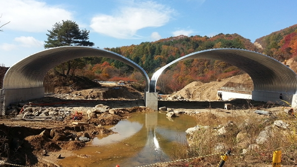

ألواح فولاذ مموج إنشائية · أنابيب · Wonder Arch
من التصميم الإنشائي إلى التصنيع ودعم التنفيذ، توفر REXSTEEL حلول الفولاذ المموج للبنية التحتية والمنشآت الوقائية.
من البنية التحتية إلى المنشآت الوقائية
هندسة فولاذ مموج تناسب شروط الموقع.
دراسة المنتجات والتصميم والتوريد معاً.


الطلاء الوظيفي بالترسيب الكهربائي
ألواح الفولاذ المموج الإنشائية
من التخريش الإلكتروليتي إلى المعالجة بالزركونيوم والطلاء بالترسيب الكهربائي: حماية سطحية اختُبرت للالتصاق ومقاومة البري والعوامل الجوية.
وفق عينات وشروط الاختبارات في العروض · التفاصيل والمصادر في صفحة التقنية

هندسة تجسدت في الميدان
تعرّف على منشآت الفولاذ المموج في مشاريع فعلية، بما فيها معابر الحياة الفطرية والجسور.





BIM للفولاذ المموج،
مترابط عبر CORRA.
يربط CORRA المطوّر لدينا الشكل ثلاثي الأبعاد والتحقق الإنشائي والرسومات والكميات. ويدعم REX-CSP مراجعة شروط تصميم الأنابيب المموجة وإنتاج الحسابات وجداول نطاق التطبيق.

المستندات التي تحتاجها
مراجع المنتجات والشهادات والتصميم في مكان واحد.
مشروعك القادم،
لنناقشه معاً.
منتجات · تصميم · توريد · دعم التنفيذ
استفسار بالبريد الإلكتروني ←Rexsteel co.,ltd
344-4 Gwangjeong-ro, Haman-myeon, Haman-gun, Gyeongsangnam-do, Republic of Korea
055.800.8901
info@rexsteel.kr
استفسارات Wonder Arch الفنية والتوريد
Jinwoo Kim · مدير
kpride78@rexsteel.kr
+82-10-3762-5144
لطلب عرض سعر، شاركنا المعلومات الأساسية.
يمكنك التواصل معنا قبل اكتمال جميع شروط المشروع.
- موقع المشروع والاستخدام المقصود
- البحر أو العرض والارتفاع والطول، أو قطر الأنبوب
- شروط الغطاء الترابي والأحمال والتربة المعروفة
- موعد التوريد المطلوب والرسومات وصور الموقع